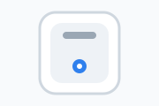
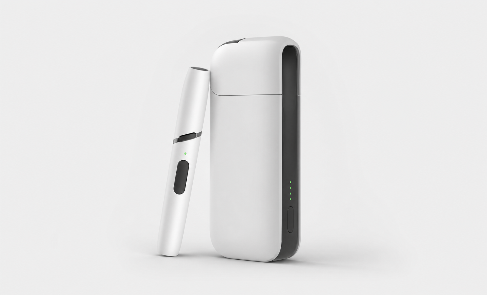
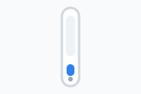

Device connection
Connect IQOS device


USB-C
Device not connected
Attach the IQOS device to begin a simulated diagnostics session.
Device connection



Attach the IQOS device to begin a simulated diagnostics session.